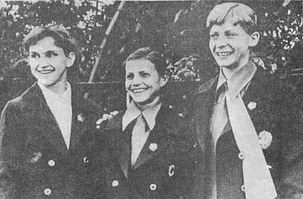

Antonina Koshel (USSR)
1972 Riga International AA Silver Medalist

Antonina Koshel, Olga Korbut, and Tamara Lazakovich in 1972.
Medal Total
Olympic Games: 1 Gold
Antonina was born on November
20, 1954 in Smolevichi (Belarussian SSR). She has four sisters and
followed the oldest one, Natalia, to the gym one day. Her first coach was
Vitaly Zatserman. But Antonina preferred ballet over gymnastics and
auditioned for a place in the local ballet school -- she was not accepted.
Everyone agreed that Antonina was better suited for gymnastics.
A year later, she entered the Minsk sports boarding school. Her family had
a difficult time paying the monthly fee, so she returned to Smolevichi.
After a competition in Minsk the following year, coach Viktor Khomutov persuaded
Antonina's parents to allow her to return to Minsk. She lived there from
the 5th grade to the 10th grade. In 1970, after winning the national youth
championships, she caught the notice of national team coaches. She
performed well at the 1971 Riga International and was invited to join the
national team. Twenty-four girls were in contention for the 1972 Olympic
team, and Antonina was one of 7 chosen to represent her country. She
finished 16th AA in Munich.
Antonina retired from gymnastics in 1974, got married and had 2 daughters. Today, she still lives in Minsk and is coach of the Belarus women's gymnastics team.
Competition Results
1970
Spordileht Newspaper Competition: 1st UB, 1st B
USSR Youth Championships: 3rd AA
1971
Bergen Cup: 1st AA
USSR Spartakiad: 1st Team, 3rd AA, 2nd UB, 4th B
1972
Golden Sands International: 1st AA, 1st UB, 1st B
NOR-USSR Dual Meet: 1st Team, 5th AA
Olympic Games: 1st Team, 16th AA
Riga International: 2nd AA, 3rd V, 3rd B
USSR Championships: 3rd Team, 7th AA, 4th V
USSR Cup: 6th AA, 4th V
USSR-NOR Dual Meet: 1st Team, 3rd AA
1973
ROM-USSR Dual Meet: 2nd Team, 11th AA
USSR Championships: 2nd Team, 2nd AA
USSR Cup: 3rd AA, 3rd V
1974
USSR Championships: 3rd Team, 3rd V, 4th B
USSR Cup: 3rd V, 4th B
This page was created on September
18, 2004 and was last updated on June 11, 2026.
© Gymn Forum